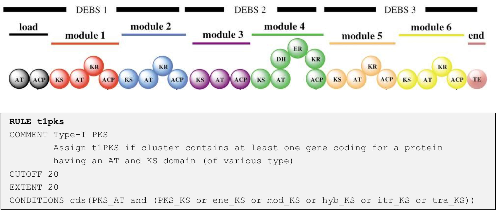

The antiSMASH region concept#
Currently, there is no good method available to accurately predict gene cluster borders based purely on the submitted sequence data (with the exception of the CASSIS algorithm, which is able to detect co-regulated genes in fungal genomes). In antiSMASH5, the display of gene clusters change to reflect the fact that the BGC borders are just offsets defined in the cluster detection rules, we renamed the highest level that is displayed to “Region”.
A region in antiSMASH 5 and above corresponds to the gene cluster annotation in antiSMASH 4 and earlier.
How are antiSMASH regions defined?#
In the first step, all gene products of the analyzed sequence are searched against a database of highly conserved enzyme HMM profiles (core-enzymes), which are indicative of a specific BGC type. In a second step, pre-defined cluster rules are employed to define individual protoclusters encoded in the region. These make up a core, which is extended by its neighbourhood, which constiutes of genes encoded up- and downstream of the core.
Here is an example of a rule for detecting a protocluster for a type I PKS:

Whenever antiSMASH finds a gene coding for a protein that has as PKS_AT domain and a PKS_KS domain of various sub-types, a new “Type I PKS protocluster” feature is generated within the region; this feature comprises the core gene-product(s) that trigger the rule (i.e. the PKS encoding genes and extends the neighborhood to the left and right of the core genes by 20 kb to the left and right (as defined by the EXTENT parameter in the rule definition). The values for the different cluster types are empirically determined and generally tend to overpredict, i.e. included also adjacent genes. After the protocluster features are assigned (note: there can be multiple protocluster features within a single region), they are checked for overlaps (as defined by the CUTOFF parameter) and are grouped into several types of candidate clusters to reflect the observation that many BGCs actually comprise several classes of biosynthetic machinery. For example glycopeptides like vancomycin or balhimycin (shown) are synthesized via NRPS, but also contain a type III PKS as a precursor pathway.

Thus, the displayed region contains the NRPS protocluster (green bar) and a T3PKS protocluster (yellow bar).
As their neighbourhoods overlap, they are assigned to a candidate cluster.
Candidate cluster types#

Chemical hybrid#
These candidate clusters contains protoclusters which share cluster-defining CDS/genes/gene products. They will also include protoclusters within that shared range that do not share a CDS, provided that they are completely contained within the supercluster border. For example, case A in the image above.
In the example, CDS 1 and 2 define the protocluster of type A, and CDS 2 and 4 define the protocluster of type B. Since both protoclusters share a CDS that defines those protoclusters, a chemical hybrid candidate cluster is created. If CDS 4 and some later CDS were also contributing to a third protocluster type, it would be merged into this same candidate cluster. If CDS 3 defined another protocluster which did not extend past CDS 1 or 4, then that new protocluster would also be included in the chemical hybrid, under the assumption that it is relevant to the other protoclusters.
Interleaved#
These candidate clusters contain protoclusters which do not share cluster-defining CDS features, but their core locations overlap, e.g. case B in the image above.
Neighbouring#
These candidate clusters are the weakest form of hybrid candidates. They contain protoclusters which do not match either chemical or interleaved variants, but transitively overlap in their neighbourhoods. Every protocluster in a "neighbouring candidate cluster" will also belong to one of the other kinds of candidate clusters, including the single kind, described below, excepting cases where it would be a single candidate and have the exact coordinates of the neighbouring candidate cluster.
Single#
This kind of candidate clusters exists where only one protocluster is contained, e.g. case D.
It exists only for internal consistency.
A single candidate cluster will not exist for a protocluster which is contained in either a chemical hybrid or an interleaved candidate cluster,
but will exist for each inside a neighbouring candidate.
For example, both protoclusters in case C will have an independent single candidate, along with the neighbouring.